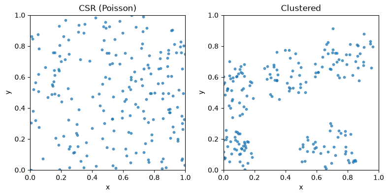
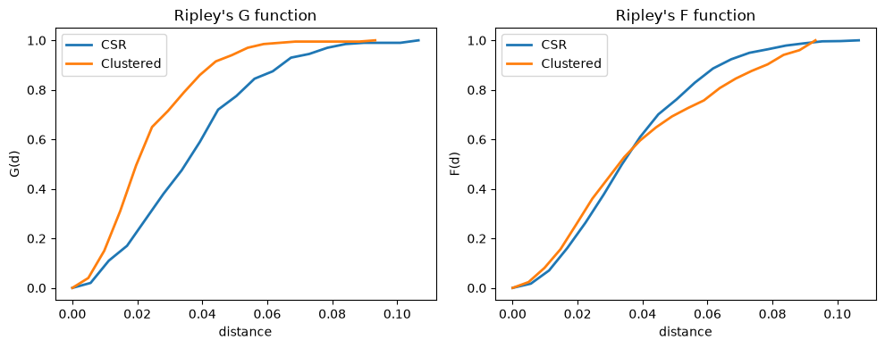
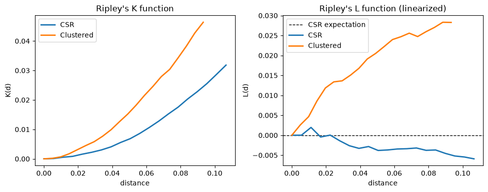
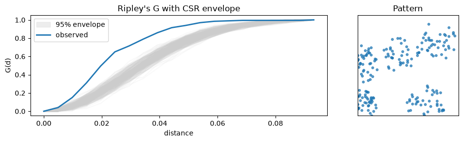

Distance-based statistics in pointpats¶
This notebook provides an introduction to the
distance-based statistics available in pointpats, focusing on:
Ripley’s G (nearest-neighbor) function
Ripley’s F (empty-space) function
Ripley’s K and L functions (inter-event distances)
Simulation-based envelopes using
g_testandk_test
We will:
Construct two toy point patterns in the unit square: one CSR (completely spatially random) and one clustered.
Compare their distance-based statistics using the functional API:
f,g,k, andl.Use
g_testandk_testto generate Monte Carlo simulation envelopes under CSR and visualize departures from complete spatial randomness.
This notebook is designed to live in the docs/user-guide/ folder and be
executed automatically as part of the pointpats documentation build.
1. Setup and imports¶
We work in the unit square [0, 1] × [0, 1] and simulate patterns using
the random distributions in pointpats.random.
import matplotlib.pyplot as plt
import numpy as np
from pointpats import PointPattern, f, g, g_test, k, k_test, l, random
# Make results reproducible
np.random.seed(12345)
# Unit square hull encoded as [xmin, ymin, xmax, ymax]
hull = np.array([0.0, 0.0, 1.0, 1.0])
hull
array([0., 0., 1., 1.])
2. Constructing example point patterns¶
We construct two patterns within the same hull:
a CSR pattern from a homogeneous Poisson process; and
a clustered pattern from a Poisson cluster process.
n_points = 200
# CSR pattern: homogeneous Poisson process in the hull
coords_csr = random.poisson(hull, size=n_points)
pp_csr = PointPattern(coords_csr)
# Clustered pattern: Poisson cluster process
coords_cluster = random.cluster_poisson(
hull,
size=n_points,
n_seeds=5,
)
pp_cluster = PointPattern(coords_cluster)
pp_csr.n, pp_cluster.n
(200, 200)
Helper: plotting point patterns¶
We will reuse a simple helper to visualize point patterns in their hull.
def plot_pattern(points, hull, ax=None, title=None):
"""Plot a 2D point pattern inside a rectangular hull.
Parameters
----------
points : array-like of shape (n, 2)
Point coordinates.
hull : array-like of length 4
Bounding box [xmin, ymin, xmax, ymax].
ax : matplotlib.axes.Axes, optional
Axis to plot on.
title : str, optional
Plot title.
"""
points = np.asarray(points)
if ax is None:
fig, ax = plt.subplots(figsize=(4, 4))
xmin, ymin, xmax, ymax = hull
ax.scatter(points[:, 0], points[:, 1], s=10, alpha=0.7)
ax.set_xlim(xmin, xmax)
ax.set_ylim(ymin, ymax)
ax.set_aspect("equal", adjustable="box")
ax.set_xlabel("x")
ax.set_ylabel("y")
if title:
ax.set_title(title)
return ax
fig, axes = plt.subplots(1, 2, figsize=(8, 4))
plot_pattern(coords_csr, hull, ax=axes[0], title="CSR (Poisson)")
plot_pattern(coords_cluster, hull, ax=axes[1], title="Clustered")
plt.tight_layout()
plt.show()

3. Distance-based summary functions: F, G, K, L¶
pointpats provides a functional API for distance-based statistics.
Each function takes coordinates and returns a pair (support, values):
support, G_vals = g(coordinates, edge_correction=None)
support, F_vals = f(coordinates, hull=hull, edge_correction=None)
support, K_vals = k(coordinates, edge_correction=None)
support, L_vals = l(coordinates, linearized=True, edge_correction=None)
Passing edge_correction=None requests the uncorrected estimator and
returns a plain (support, values) tuple — the backward-compatible form
and the current default.
To get all corrections at once as a named tuple, pass edge_correction='all'
(see the edge_corrections notebook for details).
Note: Omitting
edge_correctioncurrently returns the uncorrected estimator (same asedge_correction=None) but raises aFutureWarning. Passedge_correction=Noneexplicitly to silence the warning. In the next major release the default will change to return all corrections.
G(d): nearest-neighbor distribution from events to events.
F(d): empty-space function from random locations to events (requires a hull when distances are not precomputed).
K(d): cumulative inter-event distance function.
L(d): scaled and shifted version of K; for CSR, linearized L should be close to zero across distances.
# G: nearest-neighbor distribution
support_g_csr, G_csr = g(coords_csr, edge_correction=None)
support_g_cluster, G_cluster = g(coords_cluster, edge_correction=None)
# F: empty-space function (needs hull when distances=None)
support_f_csr, F_csr = f(coords_csr, hull=hull, edge_correction=None)
support_f_cluster, F_cluster = f(coords_cluster, hull=hull, edge_correction=None)
# K: inter-event distance function
support_k_csr, K_csr = k(coords_csr, edge_correction=None)
support_k_cluster, K_cluster = k(coords_cluster, edge_correction=None)
# L: linearized version of K
support_l_csr, L_csr = l(coords_csr, linearized=True, edge_correction=None)
support_l_cluster, L_cluster = l(coords_cluster, linearized=True, edge_correction=None)
(support_g_csr.shape, support_k_csr.shape)
((20,), (20,))
3.1 Comparing G and F¶
We first compare the G and F functions for the CSR and clustered patterns. Clustering tends to increase the probability of short distances, which is reflected differently in G and F.
fig, axes = plt.subplots(1, 2, figsize=(10, 4))
# G function
ax = axes[0]
ax.plot(support_g_csr, G_csr, label="CSR", lw=2)
ax.plot(support_g_cluster, G_cluster, label="Clustered", lw=2)
ax.set_xlabel("distance")
ax.set_ylabel("G(d)")
ax.set_title("Ripley's G function")
ax.legend()
# F function
ax = axes[1]
ax.plot(support_f_csr, F_csr, label="CSR", lw=2)
ax.plot(support_f_cluster, F_cluster, label="Clustered", lw=2)
ax.set_xlabel("distance")
ax.set_ylabel("F(d)")
ax.set_title("Ripley's F function")
ax.legend()
plt.tight_layout()
plt.show()

3.2 Comparing K and L¶
Under complete spatial randomness (CSR) with intensity lambda, we expect:
K(d)to grow likepi * d^2.L(d)(linearized) to be close to zero.
Departures above zero in L suggest clustering, while departures below zero suggest inhibition (regularity).
fig, axes = plt.subplots(1, 2, figsize=(10, 4))
# K function
ax = axes[0]
ax.plot(support_k_csr, K_csr, label="CSR", lw=2)
ax.plot(support_k_cluster, K_cluster, label="Clustered", lw=2)
ax.set_xlabel("distance")
ax.set_ylabel("K(d)")
ax.set_title("Ripley's K function")
ax.legend()
# L function
ax = axes[1]
ax.axhline(0.0, color="k", ls="--", lw=1, label="CSR expectation")
ax.plot(support_l_csr, L_csr, label="CSR", lw=2)
ax.plot(support_l_cluster, L_cluster, label="Clustered", lw=2)
ax.set_xlabel("distance")
ax.set_ylabel("L(d)")
ax.set_title("Ripley's L function (linearized)")
ax.legend()
plt.tight_layout()
plt.show()

4. Simulation envelopes with g_test and k_test¶
The functional API (f, g, k, l) gives a single curve for a given
pattern. To assess whether this curve is consistent with CSR, pointpats
provides test functions like g_test and k_test that:
Simulate many CSR patterns in the same hull.
Compute the statistic for each simulation.
Return the observed statistic, the simulated statistics, and Monte Carlo p-values at each distance.
We will apply g_test and k_test to the clustered pattern and visualize
the simulation envelopes.
n_sims = 199
g_cluster = g_test(
coords_cluster,
hull=hull,
keep_simulations=True,
n_simulations=n_sims,
)
# k_cluster = k_test(
# coords_cluster,
# hull=hull,
# keep_simulations=True,
# n_simulations=n_sims,
# )
g_cluster.support.shape, g_cluster.simulations.shape
((20,), (199, 20))
Helper: plotting simulation envelopes¶
We define a small helper that takes a test result and produces a two-panel plot showing:
the observed function and a simulation envelope; and
the point pattern used in the test.
def plot_envelope(test_result, coordinates, name="G"):
"""Plot simulation envelopes and the observed distance function.
Parameters
----------
test_result : namedtuple
Result from g_test, k_test, etc. Must have attributes
`support`, `statistic`, and `simulations`.
coordinates : array-like of shape (n, 2)
The point pattern being tested.
name : str, default "G"
Name of the statistic, used for labels and titles.
"""
support = test_result.support
observed = test_result.statistic
sims = test_result.simulations
fig, axes = plt.subplots(
1,
2,
figsize=(10, 3),
gridspec_kw={"width_ratios": (2, 1)},
)
# Left: simulation envelope + observed
ax = axes[0]
# All simulations as faint lines
ax.plot(support, sims.T, color="0.8", alpha=0.1)
# 95% envelope
lower = np.percentile(sims, 2.5, axis=0)
upper = np.percentile(sims, 97.5, axis=0)
ax.fill_between(
support,
lower,
upper,
color="0.9",
alpha=0.7,
label="95% envelope",
)
# Observed
ax.plot(support, observed, lw=2, label="observed")
ax.set_xlabel("distance")
ax.set_ylabel(f"{name}(d)")
ax.set_title(f"Ripley's {name} with CSR envelope")
ax.legend()
# Right: the pattern itself
ax = axes[1]
coords = np.asarray(coordinates)
ax.scatter(coords[:, 0], coords[:, 1], s=10, alpha=0.7)
xmin, ymin, xmax, ymax = hull
ax.set_xlim(xmin, xmax)
ax.set_ylim(ymin, ymax)
ax.set_xticks([])
ax.set_yticks([])
ax.set_aspect("equal", adjustable="box")
ax.set_title("Pattern")
fig.tight_layout()
plt.show()
plot_envelope(g_cluster, coords_cluster, name="G")

# plot_envelope(k_cluster, coords_cluster, name="K")
In these plots, departures of the observed curve outside the simulation envelope indicate scales (distances) where the clustered pattern is unlikely to have arisen under CSR.
For example, if the observed G curve lies above the envelope at short distances, that suggests an excess of close neighbors, consistent with clustering. If it lies below, that suggests inhibition or regular spacing.
5. Recap¶
In this notebook, we have:
Constructed CSR and clustered point patterns in a simple rectangular window.
Used the functional API (
f,g,k,l) to compute distance-based statistics directly from coordinate arrays.Compared how G, F, K, and L respond to CSR vs clustering.
Used
g_testandk_testto generate simulation envelopes under CSR and visualize departures from complete spatial randomness.